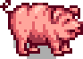
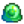

Tiere
Tiere sind in Stardew Valley primär eine Quelle für Geld und Ressourcen, die auf dem Bauernhof gewonnen werden kann. Sie können erst erworben bzw. gezüchtet werden, nachdem das jeweilige Gebäude (Hühnerstall, Stall, Schleim-Stall) auf dem Bauernhof erbaut wurde. Entweder man erwirbt sie von Marnies Ranch oder man züchtet die Tiere selbst. In beiden Fällen sind die neuen Tiere zunächst Jungtiere und müssen mit der Zeit zu Erwachsenen heranwachsen, bevor sie die jeweiligen tierischen Erzeugnisse produzieren können.
Daneben gibt es noch das Haustier und das Pferd. Beide sind bei Erhalt bereits voll ausgewachsen, das Haustier benötigt zudem nicht einmal ein eigens spezielles Gebäude, da es beim Spieler mit einzieht.
Tiere, die in Hühnerstall leben (Hühner, Enten, Hasen und Dinosaurier) haben jeden Morgen die Chance, über Nacht Produkte produziert zu haben, die dann im Inneren des Hühnerstalls vom Boden aufgesammelt werden können. Mit dem Melkkübel können Kühe normalerweise täglich gemolken werden, Ziegen können in der Regel einmal alle zwei Tage. Schafe können mit der Schere geschoren werden, wenn ihre Wolle wächst und Schweine können draußen gelassen werden, um nach Trüffel zu graben.
Haustier
Der Spieler darf entweder eine Katze oder einen Hund adoptieren. Welches der beiden Haustiere man adoptieren kann, hängt davon ab, was man bei der Charaktererstellung als das bevorzugte Tier ausgewählt hat. Es kann zwischen drei verschiedenen Arten von Hunden und Katzen gewählt werden.
Am oder vor dem 12. Frühling des ersten Jahres kommt Marnie morgens mit dem Haustier zum Spieler. Das Annehmen des Haustieres ist optional. Nach der Adoption kann der Name vom Spieler frei gewählt werde.
Einmal pro Tag kann man auf das Haustier klicken, um es zu streicheln. Daraufhin wird es dem Spieler seine  Liebe zeigen.
Liebe zeigen.
Das Haustier hat einen maximale Freundschaftswert von 1.000, welcher sich durch streicheln jedes Mal um 12 erhöht. Alle 200 Punkte entsprechen einem Freundschaftslevel, wobei 800 Punkten einen Punkt bei Opa 's Evaluation erzeugen. Bei 1.000 Freundschaftspunkten erhält man die Popup-Nachricht " <Name des Haustieres> liebt dich ♥"
Es gibt eine Wasserschüssel auf einigen hölzernen Fliesen nordwestlich des Farmhauses, die der Spieler mit Wasser für das Haustier füllen kann. Wenn diese mit der Gießkanne gefüllt wird, wird am nächsten Morgen die Freundschaft um 6 Punkte ansteigen (dies ist allerdings nicht der Fall, wenn es am nächsten Morgen regnet).
Ist es möglich, auf der Farm mehrere Haustiere zu besitzen. Dazu muss man sich bei Marnie für jedes Haustier eine Haustier-Lizenz kaufen, sobald man mit dem Haustier die maximale Anzahl an Freundschaftspunkten oder Jahr 2 ohne ein Haustier erreicht hat. Für jedes Tier sollte man auch eine Wasserschüssel bauen, um zu vermeiden, dass man Freundschaftspunkte mit dem Haustier verliert.
Katzen und Hunde
Hüte können auf Katzen und Hunden platziert werden.

Leere Wasserschale

Volle Wasserschale

Von Dev Blog #29

Von Dev Blog #29
Schildkröten
Hüte können auf Schildkröten platziert werden.
Pferd

Das Pferd ist ein Reittier, das die Bewegungsgeschwindigkeit um 30 % erhöht. Wenn es irgendwo über Nacht stehengelassen wird, wird es den Weg nach Hause finden und im nächsten Morgen im Stall sein. Es wird durch den Kauf des Pferdestalls vom Schreinerladen erhalten. Das Pferd wird vom Spieler mit einem Namen versehen, wenn man versucht, zum ersten Mal zu reiten.
Das Pferd passt durch alle Lücken, wenn man horizontal reitet, aber es braucht genug Platz über zwei Felder, wenn man vertikal reitet. Das bedeutet, dass man während des Reitens nicht durch alle Lücken kommt, durch die man normalerweise zu Fuß gehen kann. Das Pferd verlangsamt sich nicht, während es durch angepflanzte Nutzpflanzen auf der Farm reitet.
Der Spieler kann dem Pferd Hüte aufsetzen.
Tierpflege
Freundschaft

Tiere, die in Hühnerställen und Ställen leben, haben eine Freundschaftswertung, die man mit einem Rechtsklick auf das Tier nach dem Streicheln sehen kann (während man Heu hält, kann man dieses Fenster nicht öffnen, was nützlich sein kann, wenn man es öfter versehentlich öffnet). Die Wertung besteht aus 5 Herzen, wird in Halbherz-Schritten gezeigt und wird zur Berechnung herangezogen, wie wahrscheinlich das Tier qualitativ hochwertige Produkte produziert.
Jedes halbe Herz entspricht 100 Punkten Freundschaft, der Maximalwert der Freundschaft liegt bei 1.000 Punkten.
Folgende Handlungen beeinflussen die Freundschaft:
- Streicheln (+15, oder +30 wenn Spieler die Fähigkeit Shepherd oder Coopmaster hat)
- Melken oder Scheren (+5, keine Strafe für nicht gemolken oder geschert)
- Draußen Gras essen (+8)
- Nicht gefüttert (-20, Berechnetes Tag-Ende )
- Über Nacht ausgesperrt (-20, wird am Ende des Tages berechnet)
- Nicht gestreichelt (-5 bis -10, Berechnetes am Ende des Tages durch die Formel: 10 - (Freundschaftswert / 200))
Stimmung
Die Stimmung ist ein sehr wichtiger Faktor bei der Berechnung der Qualität und Art der Tierprodukte. Sie wird nur berücksichtigt, wenn das Spiel zu Beginn des Tages die Qualität der Tierprodukte berechnet und hat ansonsten keine Auswirkung im Spiel.
Wie die Freundschaft kann die aktuelle Stimmung eines Tieres durch einen Rechtsklick nach dem Streicheln des Tieres (indirekt) überprüft werden.
Die Stimmung kann einen Wert von 0 bis 255 annehmen. Man kann den aktuellen Wert aus der Nachricht im Rechtsklick-Dialog abschätzen:
- <Tiername> sieht heute sehr glücklich aus! = Stimmung ist mindestens 200 und höchstens 255.
- <Tiername> sieht gut aus. = Stimmung ist mindestens 30 und weniger als 200.
- <Tiername> sieht traurig aus. = Stimmung ist mindestens 0 und weniger als 30.
Folgende Aktionen beeinflussen die die Stimmung (Minuten = Ingame):
Positive Effekte
- Streicheln (+32 bis +36 abhängig von der Tierart, verdoppelt sich, wenn der Spieler die Fähigkeit Hirte oder Stallmeister hat)
- Draußen Gras essen (Setzt Stimmung auf 255)
- Während des Winters: Tier ist in einem Raum mit einer Heizung und hat Stimmung 150 oder höher (+4 bis +8 alle 10 Minuten nach 18:00 Uhr, die der Spieler wach bleibt. Nur eine Heizung erforderlich. Überschreibt alle anderen "alle 10 Minuten"-Effekte)
- Tier wurde gefüttert (+4 bis +16, abhängig von Tierart. Wird berechnet, wenn der Spieler schläft, prüft, ob das Tier entweder Heu oder Gras aß)
- Tier ist draußen nach 18:00 Uhr, aber vor 19:00 Uhr und hat weniger als 150 Stimmung (+4 bis +8 alle 10 Minuten. Kumuliert nicht mit anderen "alle 10 Minuten"-Effekten)
Negative Effekte
- Tier ist im Regen oder Winter draußen (-4 bis -8 alle 10 Minuten. Kumuliert nicht mit anderen "alle 10 Minuten"-Effekten)
- Tier ist nach 19:00 Uhr draußen (-4 bis -8 alle 10 Minuten. Kumuliert nicht mit anderen "alle 10 Minuten"-Effekten)
- Tier hat draußen geschlafen(- Hälfte der aktuellen Stimmung, wird berechnet, wenn der Spieler einschläft)
- Tier wurde nicht gestreichelt (- 20 bis -40, abhängig von der Tierart)
- Tier wurde nicht gefüttert (-100)
Ein geschlossenes Stalltor hindern die Tiere daran, Gras draußen zu essen, bevor sie gestreichelt werden.
Produktion
Jede Tierart benötigt eine bestimmte Anzahl an Tagen zur Produktion ihrer jeweiligen Erzeugnisse. Zum Beispiel können Kühe und Hühner täglich Milch und Eier geben, während eine Ziege nur jeden zweiten Tag Milch geben kann.
Zusätzlich hemmen am Produktionstag folgende Ereignisses die Produktion:
- Wenn das Tier nicht gefüttert wurde, wird es nicht produzieren.
- Wenn das Tier weniger als 70 Stimmung hat, gibt es eine Wahrscheinlichkeit, das nichts produzieren wird. Je niedriger die Stimmung, desto unwahrscheinlicher wird produziert. (Wahrscheinlichkeit für Produktion ist gleich Stimmung/70)
Ob ein Tier ein Deluxe-Produkt oder ein großes Produkt gibt, sowie welche Qualität das Produkt hat, wird am Anfang des Tages durch eine Zufälligkeit sowie eine Kombination aus Stimmung und Freundschaft bestimmt. Die prinzipielle Fähigkeit, überhaupt evtl. Deluxe/große/hochqualitative Produkte produzieren zu können, hängt von der Stimmung ab:
- Stimmung ist höher als 150: Fähigkeit sicher (Fähig, die Wahrscheinlichkeit der jeweiligen Qualität überhaupt zu berechnen, genaueres siehe untere Abschnitte)
- Stimmung ist unter 150: Fähigkeit wahrscheinlich (ist gleich Stimmung/150)
Sonderfall: Wenn ein Tier die Anforderung erfüllt, etwas zu produzieren, aber nicht die prinzipielle Fähigkeit, wird das Spiel nicht die Tatsache registrieren, dass es ein Produkt an diesem Tag erzeugt hat. In diesem Fall werden Tiere, die normalerweise mehrere Tage benötigen, um zu produzieren, sofort wieder am nächsten Tag produzieren.
Stimmungs-Modifikator
Ein "Stimmungs-Modifikator" wird bei der Berechnung der Wahrscheinlichkeit, ob Deluxe-Produkte (Große Produkte, Entenfedern und Hasenfüße) produziert werden, herangezogen. Er wird auf folgende Weise definiert:
- Wenn Stimmung mehr als 200 = Stimmung x 2
- Wenn die Stimmung 200 oder weniger = Stimmung x -2
Dieser "Stimmungs-Modifikator" wird je nach Tier in unterschiedlicher Weise eingesetzt.
Versuche, eine durchschnittliche Stimmung zu vermeiden, um einen hohe Malus zu verhindern.
Entenfeder und Hasenpfote
Enten und Hasen berücksichtigen zusätzlich noch das Tägliche Glück bei der Berechnung, die feststellt, ob Deluxe-Erzeugnisse produziert werden.
Für jede Ente und Kaninchen wird eine Gesamtpunktzahl mit folgender Formel erstellt: (Freundschaft + Stimmungs-Modifikator)/5.000 + Tägliches Glück
- Beispielsweise wird diese Gesamtpunktzahl bei einem Tier mit 600 Freundschaft (3 Herzen), 150 Stimmung und 0,10 Tägliches Glück wie folgt berechnet:
=(600 + (150*(-2)))/5.000 + 0,10
=(600-300)/5.000 + 0,10
=0,16
Jedes Mal, wenn die Berechnung gestartet wird, wird erst eine Zufallszahl zwischen 0-1 ausgewählt. Wenn die Gesamtpunktzahl höher ist als diese Zufallszahl, wird ein Deluxe-Produkt produziert.
Bei maximaler Freundschaft, Stimmung und Glück gibt es somit eine 40%-Wahrscheinlichkeit auf ein Deluxe-Produkt.
Großes Ei und Große Milch
Bei Tieren, die große Produkte produzieren können (alle Hühner, Kühe und Ziegen), wird das Spiel hierbei Stimmung und Freundschaft berücksichtigen.
Für jedes Tier wird eine Gesamtpunktzahl mit folgender Formel erstellt: (Freundschaft + Stimmungs-Modifikator)/1.200
- Beispielsweise wird diese Gesamtpunktzahl bei einem Tier mit 600 Freundschaft (3 Herzen) und 150 Stimmung wie folgt berechnet:
=((600 + (150*(-2)))/1.200
=(600-300)/1.200
=0,25
Jedes Mal, wenn die Berechnung gestartet wird, wird erst eine Zufallszahl zwischen 0-1 ausgewählt. Wenn die Gesamtpunktzahl höher ist als diese Zufallszahl, wird ein großes Produkt produziert.
Ab einer Gesamtpunktzahl von mindestens 1.200 wird definitiv ein großes Produkt produziert.
Qualität
Bei Tieren, die Produkte mit unterschiedlicher Qualität produzieren, wird diese Qualität mit den Ausprägungen Normal, Silber, Gold und Iridium wie folgt berechnet:
Für jedes Tier wird eine Gesamtpunktzahl mit folgender Formel erstellt: ((Freundschaft/1.000) - (1 - (Stimmung/225))
- Beispielsweise wird diese Gesamtpunktzahl bei einem Tier mit 600 Freundschaft (3 Herzen) und 150 Stimmung wie folgt berechnet:
=((600/1.000) - (1 - (150/225))
=0,6 - (1 - 0,666...)
=0,6 - 0,333...
=0,266...
Falls der Spieler die Fähigkeit Hirte oder Stallmeister hat, wird bei entsprechenden Produkten die Gesamtpunktzahl um 0,33 Punkte erhöht.
Das Spiel berechnet nun, welche Qualitätsausprägung produziert wird, indem es zuerst prüft, ob die Gesamtpunktzahl über 0,95 liegt. In diesem Fall wird diese halbiert und mit einer Zufallszahl zwischen 0-1 verglichen. Wenn die halbierte Gesamtpunktzahl höher ist als diese Zufallszahl, wird ein Produkt iridischer Qualität produziert.
- Im obigen Beispiel ist die Gesamtpunktzahl von 0,266... nicht über 0,95. Der Gegenstand kann somit keine iridische Qualität annehmen.
Falls kein Produkt iridischer Qualität erzeugt wurde, wird erneut die Gesamtpunktzahl halbiert und mit einer Zufallszahl zwischen 0-1 verglichen. Wenn nun die halbierte Gesamtpunktzahl höher ist als diese Zufallszahl, wird ein Produkt goldener Qualität produziert.
- Im obigen Beispiel wird die Gesamtpunktzahl 0,266... halbiert, sie nimmt also den Wert 0,133... an. Das bedeutet, dass es mit diesen Freundschafts- und Stimmungs-Werten eine 13,3%-Wahrscheinlichkeit gibt, dass ein Produkt von goldener Qualität produziert wird.
Falls nun auch kein Produkt von goldener Qualität erzeugt wurde, wird die diesmal unveränderte Gesamtpunktzahl mit einer Zufallszahl zwischen 0-1 verglichen. Wenn nun die Gesamtpunktzahl höher ist als diese Zufallszahl, wird ein Produkt silberner Qualität produziert.
- Im obigen Beispiel wird, wenn nicht bereits ein Gegenstand von goldener Qualität produziert wurde, der Gegenstand mit einer Wahrscheinlichkeit von 26,7% silberne Qualität annehmen.
Falls nun auch kein Produkt von silberner Qualität erzeugt wurde, ist der Gegenstand von normaler Qualität.
Behausung
Die Gebäude können im Schreinerladen erworben werden und werden daraufhin innerhalb weniger Tage am gewünschten Ort von Robin aufgebaut. Einmal platziert, können sie nachträglich ebenfalls im Schreinerladen verschoben werden.
Hühnerställe, Ställe und Schleim-Ställe dienen der Unterbringung der Tiere, Silos lagern Heu und der Pferdestall schaltet das Pferd frei.
Futter
Tiere sterben nicht, wenn sie nicht gefüttert werden, sondern werden verstimmt und setzen die Produktion von tierischen Produkten aus, bis die Fütterung wieder aufgenommen wird.
Tiere, die in Ställen und Hühnerställen leben, können entweder frisches Gras (draußen) oder Heu (wenn im Stall gehalten oder unfähig, draußen Gras zu finden) fressen. Diese Tiere werden ihre Stimmung zu "sehr glücklich heute!" ändern, wenn sie frisches Gras fressen. Slimes müssen nur ihre Wannen mit Wasser aus der Gießkanne gefüllt haben, und Pferde und Haustiere müssen überhaupt nicht essen.
An einem Festtag müssen die Tiere nicht gefüttert werden, das Spiel wird sie automatisch als gefüttert ansehen.
Gras und Heu
Das Öffnen der Tore eines Hühnerstalls oder Stalls erlaubt es den Tieren, nach draußen zu gehen (wenn das Wetter nicht regnerisch, schneebedeckt oder stürmisch ist) und Gras zu fressen. Die Tiere werden ab 18 Uhr in ihren Stall zurückkehren. Das Verschließen der Tore am Abend wird verhindern, dass sie sofort am Morgen nach draußen gehen, um Gras zu fressen. Sie können während des Tages wieder geöffnet werden, damit sie fressen können. Das Schließen der Tore, bevor alle Tiere zurückgekehrt sind, wird dazu führen, dass diejenigen, die über Nacht ausgesperrt sind, schutzlos gegenüber möglichen nächtlichen Attacken von Wölfen sind und falls sie nicht gefressen werden, wird zumindest ihre Stimmung stark reduziert, wenn sie draußen in der Kälte gelassen werden.
Falls die Tiere drinnen bleiben oder kein Gras zum Essen finden, fressen sie stattdessen Heu. Um sie damit zu füttern, kann der Spieler aus dem Heu-Trichter (der automatisch Heu vom Silo nimmt) einen Heuballen nehmen und in die Futterbank legen. der Luxus-Hühnerstall und der Luxus-Stall verteilen das Heu automatisch. Jedes Tier frisst einen Heuballen pro Tag.

Sobald ein Silo auf dem Bauernhof gebaut wurde, wird durch den Gebrauch der Sense auf Gras automatisch Heu in das Silo gefüllt (50%-Wahrscheinlichkeit). Jedes Silo fasst maximal 240 Heuballen. Heu kann dann aus Trichtern in den Ställen genommen und in den Futterkisten in der Nähe platziert werden. Es empfiehlt sich, bevor man einen Stall errichten lässt, zuerst ein Silo zu errichten, da dies die Fütterung leichter vonstatten gehen lässt, obwohl natürlich auch Heu von Marnies Ranch gekauft werden kann, auch wenn das Silo nicht gebaut wurde.
Im Winter bedeckt der Schnee das Gras vollständig und macht somit das Weiden unmöglich. Daher ist es ratsam, das ganze Gras vor dem Ende der Herbstsaison zu mähen, um genügend Heureserven einzulagern, um die Tiere (kostengünstig) durch den Winter zu bringen.
Angriffe wilder Tiere
Wenn ein Tier über Nacht ausgesperrt ist, kann es passieren, dass es in dieser Zeit von einem wilden Tier angegriffen wird.[1]
Nachdem der Spieler schlafen gegangen ist, werden alle Ereignisse, die sich während der Nacht abspielen (beispielsweise Bündel-Events), vorrangig ereignen. Wenn kein Ereignis auftritt, wird das Spiel nun mit einer 50%-Wahrscheinlichkeit einen Tierangriff beginnen lassen. Falls dem so ist, wird das Spiel alle Gebäude prüfen, ob es ein Stallgebäude mit geschlossenem Tor und mindestens einem ausgesperrten Tiere gibt.
Für jedes Gebäude nimmt das Spiel eine Zufallszahl zwischen 0 und 1 und vergleicht es mit 1/(Anzahl aller landwirtschaftlichen Gebäude). Falls die Zufallszahl größer ist, wird das Gebäude ignoriert. Mit anderen Worten, je mehr Gebäude der Spieler hat, desto weniger wahrscheinlich wird man angegriffen.
- Beispielsweise hat ein Spieler mit zwei landwirtschaftliche Gebäude eine Chance von 50%, angegriffen zu werden, drei Gebäude würden 33% ergeben, vier würden 25% ergeben, usw.
Wurde ein Gebäude gewählt, wird das erste Tier, das ausgesperrt wurde, zum Ziel des Angriffs. Das Tier wird entfernt und am Morgen werden alle anderen ausgesperrten Tiere am nächsten Tag verstimmt sein.
Geburt eines Tieres
Analog zu den Angriffen wilder Tiere gibt es jede Nacht, wenn kein anderes Ereignis auftritt, eine 50%-Wahrscheinlichkeit, dass ein "großes" Stalltier wirft. Das Spiel prüft, ob es eine mindestens einmal aufgerüstete Scheune gibt, die nicht voll ist. Ist dies der Fall, wird mit einer Wahrscheinlichkeit von 0,55% * (die Anzahl der Tiere im Inneren) dieses Gebäude ausgewählt. Wird es nicht ausgewählt, prüft das Spiel jeweils alle weiteren in Frage kommenden Gebäude nacheinander.
- Beispielsweise wird ein verbesserter Stall mit drei Tieren im Inneren mit einer Wahrscheinlichkeit von 1,65% ausgewählt.
Falls ein Stall ausgewählt wird, wird darin ein Tier zufällig ausgewählt. Wenn das Tier kein Jungtier und die Option Schwangerschaft aktiviert ist, wird dieses Tier in dieser Nacht werfen.
Tiere im Hühnerstall
Die folgenden Tiere können nicht erworben werden, bis ein Hühnerstall auf deinem Bauernhof gebaut wurde; weiterhin muss dieser einen freien Platz aufweisen. Die Erzeugnisse dieser Tiere sind auf dem Boden des Hühnerstalls zu finden.
Hühner
- Hauptartikel: Huhn
Ausgewachsene Hühner produzieren jeden Morgen Eier, wenn sie am Vortag gefüttert wurden. Glücklichere Hühner können größere, wertvollere Eier produzieren (siehe oben).
| Bild | Name | Kaufpreis | Erzeugnisse | Verkaufspreis mit 5 Herzen |
|---|---|---|---|---|
| Weißes Huhn | ||||
| Braunes Huhn | ||||
| Blaues Huhn | ||||
| Schattenhuhn | (für das Ei) |
|||
| Goldenes Huhn | N/A |
Das Schattenhuhn erlangt man über ein seltenes Zufallsereignis: Nachdem der Spieler sich schlafen gelegt hat, fliegt die Hexe über einen der Hühnerställe und macht etwas Hexenhaftes. Am nächsten Morgen findet sich statt eines normalen Eies ein Schattenei. Alternativ kann ein Schattenei vom Reisewagen im Zundersaftwald oder von Krobus für  5.000 G in der Kanalisation kaufen. Das Schattenei muss nun in einem Brutkasten platziert werden (ab großer Hühnerstall) und nach ein paar Tagen ist das Schattenhuhn ausgebrütet.
5.000 G in der Kanalisation kaufen. Das Schattenei muss nun in einem Brutkasten platziert werden (ab großer Hühnerstall) und nach ein paar Tagen ist das Schattenhuhn ausgebrütet.
Ob man ein weißes oder braunes Huhn beim Kauf von Marnies Ranch erhält, ist komplett zufällig.
Nachdem man Shanes 8-Herz-Event gesehen hat, hat jedes Huhn, das man von Marnies Ranch erwirbt, eine 25%-Wahrscheinlichkeit, von blauer Farbe zu sein. Abgesehen vom Aussehen sind blaue Hühner identisch mit weißen Hühnern.
Man kann ein Huhn in den Farben Weiß, Braun oder Blau erhalten (nachdem Blau freigeschaltet ist), wenn man mit Hilfe des Brutkastens ein Ei ausbrütet. Die Farbe des Eies spielt für das Ergebnis keine Rolle.
Um Gold-Eier und somit goldene Hühner zu erhalten, muss 100% Perfektion erreicht sein. Danach hat der Spieler die Möglichkeit Gold-Eier bei Marnies Ranch für  100.000 G oder im Geheimen Walnusszimmer von Mr. Qi für
100.000 G oder im Geheimen Walnusszimmer von Mr. Qi für  100 zu erwerben. Auch das seltene Hexenevent ist dann eine Möglichkeit ein goldenes Ei zu erhalten.
100 zu erwerben. Auch das seltene Hexenevent ist dann eine Möglichkeit ein goldenes Ei zu erhalten.
Enten
- Hauptartikel: Ente
Ausgewachsene Enten legen jeden Tag ein Ei oder lassen eine Entenfeder fallen. Glücklichere Enten haben eine höhere Chance, Entenfedern anstelle eines Eies zu produzieren (siehe oben).
| Bild | Name | Kaufpreis | Erfordert | Erzeugnisse | Verkaufspreis mit 5 Herzen |
|---|---|---|---|---|---|
| Ente | Großer Hühnerstall |
Hasen
Hasen produzieren ab einem bestimmten Freundschaftswert neben Wolle auch Hasenfüße (siehe oben).
- Hauptartikel: Hase
| Bild | Name | Kaufpreis | Erfordert | Erzeugnisse | Verkaufspreis mit 5 Herzen |
|---|---|---|---|---|---|
| Hase | Luxus-Hühnerstall |
Dinosaurier
- Hauptartikel: Dinosaurier
Um einen Dinosaurier zu erhalten, muss ein Dinosaurier-Ei gefunden werden, während man nach Artefakten sucht. Wird dieses Ei in einen Brutkasten gelegt, schlüpft nach einigen Tagen ein Dinosaurier. Dieser wird sich wie jedes andere Tier im Hühnerstall verhalten, legt alle 1-5 Tage ein Dinosaurier-Ei und gibt keinen Ton von sich.
| Bild | Name | Kaufpreis | Erfordert | Erzeugnisse | Verkaufspreis mit 5 Herzen |
|---|---|---|---|---|---|
| Dinosaurier | nicht erwerbbar | Großer Hühnerstall |
Tiere im Stall

Die folgenden Tiere können nicht erworben werden, bis ein Stall auf deinem Bauernhof gebaut wurde; weiterhin muss dieser einen freien Platz aufweisen. Die Erzeugnisse dieser Tiere werden entweder mit einem speziellen Werkzeug gewonnen oder im Falle der Schweine draußen auf dem Boden beim Weiden "ausgegraben".
Scheunentiere können zufällig schwanger werden (siehe oben), wenn die Schwangerschaftsoption in ihrem Statusmenü aktiviert ist (erneuter Rechtsklick auf das Tier nach dem Streicheln). Wenn ein Tier schwanger wird, erscheint in der Nacht dazu eine Mitteilung. Am nächsten Morgen hat das schwangere Tier dann bereits geworfen. Man wird nun aufgefordert, einen Namen für das neue Tier zu bestimmen.
Kühe
- Hauptartikel: Kuh
Ausgewachsene Kühe geben (fast) jeden Morgen Milch, wenn sie am Vortag gefüttert wurden. Zum Melken muss von Marnies Ranch ein Melkkübel erworben werden. Glücklichere Kühe können größere, wertvollere Milch produzieren (siehe oben). Bei Interaktionen mit Kühen werden diese ihre Zunge dem Spieler gegenüber ausstrecken.
| Bild | Name | Kaufpreis | Erzeugnisse | Verkaufspreis mit 5 Herzen |
|---|---|---|---|---|

|
Kuh | |||

|
Kuh |
Ziegen
- Hauptartikel: Ziege
Ziegen verhalten sich wie Kühe, nur dass sie lediglich jeden zweiten Tag Milch geben können.
| Bild | Name | Kaufpreis | Erfordert | Erzeugnisse | Verkaufspreis mit 5 Herzen |
|---|---|---|---|---|---|

|
Ziege | Große Scheune |
Schafe
- Hauptartikel: Schaf
Schafe müssen geschoren werden, wenn ihr Wollhaar wächst. Die dazu nötige Schafschere kann von Marnies Ranch gekauft werden.
Das Wollhaar eines Schafes ist normalerweise nach drei Tagen bereit für die Schur, wenn es gefüttert wurde und mindestens 70 Glück hat. Sobald der Spieler 900 oder mehr Freundschaft mit dem Schaf hat und es mindestens einmal streichelt, wird es bereits jeden zweiten Tag bereit für die Schur.
Durch die Fähigkeit Hirte wird diese Zeit um einen weiteren Tag reduziert, somit kann dann ein glückliches Schaf täglich geschoren werden.
| Bild | Name | Kaufpreis | Erfordert | Erzeugnisse | Verkaufspreis mit 5 Herzen |
|---|---|---|---|---|---|

|
Schaf | Luxus-Stall |
Schweine
- Hauptartikel: Schwein
Ausgewachsene Schweine graben nach Trüffeln, wenn sie raus gelassen wurden. Trüffel können mit Hilfe der Ölpresse zu Trüffelöl veredelt werden.
Da Trüffel keine tierischen Erzeugnisse sondern sammelbare Gegenstände darstellen, unterliegt ihre Gewinnung der Fähigkeit Sammeln. Durch entsprechende Fähigkeiten können daher stets Trüffel von irdischer Qualität gesammelt werden, zusätzlich mit der Chance auf doppelter Ernte.
Während des Winters können Schweine keine Trüffel ausgraben, da das Land mit Schnee bedeckt ist und sie die Scheune nicht verlassen werden.
| Bild | Name | Kaufpreis | Erfordert | Erzeugnisse | Verkaufspreis mit 5 Herzen |
|---|---|---|---|---|---|
|  | Schwein | Luxus-Stall |
Strauße
- Hauptartikel: Strauß
| Bild | Name | Kaufpreis | Erfordert | Erzeugnisse | Verkaufspreis mit 5 Herzen |
|---|---|---|---|---|---|

|
Strauß | N/A | Großer Stall |
Tiere im Schleim-Stall
- Hauptartikel: Schleim-Stall


Obwohl sie technisch gesehen keine Tiere, sondern Monster sind, können Schleime auf dem Bauernhof ähnlich wie andere Tiere wohnen. Schleime sind darin einzigartig, dass sie nicht fügsam und harmlos wie andere Tiere sind. Sie ähneln in ihrem Äußeren und Verhalten den anderen im Spiel auftretenden Schleimen und werden versuchen, den Spieler anzugreifen und zu verletzen. Sie können durch die Platzierung eines Schleimballes in einem Schleimbrutkasten gezüchtet werden.
Schleime produzieren  Schleimbälle, und zwar nur, wenn sowohl männliche als auch weibliche Schleime an der gleichen Stelle vorhanden sind und wenn man diese durch den Trog Zugang zu Wasser erhalten. Wenn man auf den Schleimball mit der rechten Maustaste klickt, gibt dieser mehrere
Schleimbälle, und zwar nur, wenn sowohl männliche als auch weibliche Schleime an der gleichen Stelle vorhanden sind und wenn man diese durch den Trog Zugang zu Wasser erhalten. Wenn man auf den Schleimball mit der rechten Maustaste klickt, gibt dieser mehrere  Schleim-Objekte frei. Schleimbälle können täglich erscheinen, ähnlich wie die Produkte von Hühnerstall-Tiere.
Schleim-Objekte frei. Schleimbälle können täglich erscheinen, ähnlich wie die Produkte von Hühnerstall-Tiere.
Männliche und weibliche Schleime werden sich auch gelegentlich fortpflanzen. Die Farbe der Nachkommen ist abhängig von den Farben der Eltern und kann auch eine entsprechenden Mischung der Farbspektren sein (z. B. ein grüner Schleim kann mit einem roten Schleim auch einen gelben oder orangenen Schleim zeugen).
 Schleim-Eier können als seltene Beute von Schleimen oder durch Komprimierung von 100 Schleim-Objekten in einem Schleim-Eierpresse erhalten werden. Sie kommen in verschiedenen Farben vor und werden zu Schleimen von der gleichen Farbe wie das Ei. Schleim von jeder Farbe können mit Schleimen von jeder anderen Farbe gezüchtet werden.
Schleime, die so ausgebrütet oder gezüchtet wurden, können wie alle anderen Schleime im Spiel bekämpft und getötet werden, wodurch Gegenstände als Beute erscheinen. Ein Schleim-Stall kann ein sehr gefährlicher Ort werden, nachdem ein paar Eier geschlüpft sind, und es wird empfohlen, dass der Spieler hierbei Vorsicht walten lässt. Es wird empfohlen, dass der Spieler den Schleim-Charmeurring benutzt, bevor er eine großflächige Schleimzucht beginnt.
Es ist zu beachten, dass, sobald im Schleim-Stall mehr als 5 Slimes leben, es eine Wahrscheinlichkeit von 3,5% pro Nacht und pro Schlamm gibt, das dieser entkommt und somit verschwindet.
Schwarze Schleime erlangt man durch ein nächtliches Zufallsereignis: Nachdem der Spieler sich schlafen gelegt hat, fliegt die Hexe über einen der Schleimställe und macht etwas Hexenhaftes. Dadurch färben sich alle Schleime schwarz.
Sonstige Tiere
Mit vielen Tieren kann der Spieler nicht interagieren, wie beispielsweise Kaninchen, Eichhörnchen, grüne Frösche, Krähen, Spechte, Sperlinge (kleine braune Vögel) und die Seeschlange. Eichhörnchen können gelegentlich dazu führen, dass eine Haselnuss oder ein anderer Baumsamen auf den Boden fällt.
Schmetterlinge

Schmetterlinge sind reichlich vorhanden und existieren in vielen Farben, obwohl sie nur draußen bei warmem Wetter angetroffen werden können. Um Schmetterlinge zu sehen, schüttel oder fälle Bäume oder platziere einen Schmetterlingsstall.
Krähen
Jede Nacht besteht eine Wahrscheinlichkeit, dass Krähen Nutzpflanzen auf dem Hof fressen.[2] Krähen fressen keine Nutzpflanzen, die aus Wilder Saat, Saaten selbst (d.h., Nutzpflanzen, die an dem Tag gepflanzt wurden) oder Nutzpflanzen innerhalb der Reichweite von einer oder mehreren Vogelscheuchen.
Pro 16 Nutzpflanzen (abgerundet) kann eine Krähe versuchen eine Nutzpflanze zu fressen. Dieses ist auf maximal 4 Krähen begrenzt.
Jede Krähe versucht mit einer 30% Wahrscheinlichkeit zu fressen. Eine Krähe, die versucht Nutzpflanzen zu fressen, versucht 10 Mal eine geeignete Pflanze zu finden. Eine Krähe wählt ein zufälliges Feld auf dem Hof aus, welches entweder beackert ist, einen Baum oder Gras enthält oder einen Fußboden hat. (Hinweis: Dies geschieht nach der Übernacht-Auflockerung der Erde[3]). Wenn dieses Feld eine Nutzpflanze enthält, die aus den Samen sprießt, hört die Krähe auf zu suchen. Befindet sich die Pflanze in Reichweiter einer Vogelscheuche, wird die Krähe verscheucht. Andernfalls frisst die Krähe die Nutzpflanze. Krähen fressen ebenfalls tote Pflanzen, die aus früheren Jahreszeiten übrig geblieben sind.
Jede Krähe frisst nur eine Pflanze, kann aber danach noch weiter umher hüpfen und auf dem Boden picken. Diese Animation ist rein kosmetisch.
Bevor Vogelscheuchen freigeschaltet werden, kann nur sichergestellt werden, dass keine Krähen erscheinen, indem höchstens 15 Nutzpflanzen auf einmal gepflanzt werden. Dieses bedeutet, dass die anfänglichen 15 Pastinaken-Saat, die von Lewis bereitgestellt werden, alle sicher eingepflanzt werden können. Sie zu ernten gibt dem Spieler genug Erfahrungspunkte, um Stufe 1 in Hofarbeit zu erreichen und Vogelscheuchen freizuschalten. Das Pflanzen einer zusätzlichen Nutzpflanze (sogar Wildsamen oder eine Pflanze im Samen-Stadium) kann jedoch Krähen anziehen.
Auf der Ingwerinsel gibt es keinerlei Krähen, somit bezieht sich dieser Abschnitt nicht auf Nutzpflanzen, die dort gepflanzt werden.

Glühwürmchen
Glühwürmchen können überall nachts gesehen werden, besonders im Zundersaftwald während des Sommers. Sie erzeugen einen kleinen Lichtschein um sich herum.

Eulen
Eulen sind etwas ungewöhnlich und können nur nachts gesehen werden (19:00 Uhr bis 02:00 Uhr). Sie können in allen Jahreszeiten gesehen werden.

Möwen
Möwen leben am Strand. Wenn sie angetroffen werden, schwimmen sie im Wasser, tun nichts oder reinigen sich mit ihrem Schnabel. Sollte der Spieler ihnen zu nahe kommen, werden sie wegfliegen.

Fehler
- Wenn das Haustier nahe dem Weg zum Wäldchen den Weg blockiert, während der Spieler auf einem Pferd reitet, wird sich das Haustier nicht bewegen, um den Spieler durchzulassen.
- Es ist möglich, einfach durch 1-Feld-breite Objekte (wie Zäune, Sprinkler oder Vogelscheuchen) durchzurutschen, während man ein Pferd reitet. Hierzu einfach vertikal neben dem Objekt reiten und dann um 90° in das Objekt drehen.
- Das Parken des Pferdes hinter dem Eisstand, erlaubt es dem Spieler auch ohne Verkäufer Eis zu kaufen. Dieses ist zu jeder Jahreszeit möglich, wenn das Pferd hinter den Sonnenschirm abgestellt wird.


Referenzen
Geschichte
- 1.3.27: Fehler behoben, bei dem die Tierstimmung abnahm, wenn der Spieler nach 18 Uhr aufblieb. Möglichkeit hinzugefügt, Hüte auf Pferden zu platzieren.
- 1.4: 2 neue Katzen- und Hundearten hinzugefügt. Möglichkeit hinzugefügt, das Aussehen des Haustiers beim Schrein der Illusionen zu ändern. Möglichkeit hinzugefügt, Hüte von Pferden zu entfernen. Exploit entfernt, bei dem Tapete #108 anstelle eines Dinosaurier-Eis in einem Brutkasten verwendet werden konnte. Regen füllt jetzt die Wasserschüssel. Der Tierverkauf zählt jetzt zum gesamten Spielverdienst.
- 1.4.3: Fehler behoben, bei dem die Benennung eines Haustieres mit dem gleichen Namen wie eines NPCs dazu führte, dass das Haustier den NPC im Kalender ersetze.
- 1.5: Enten-Kaufpreis von 4000 G auf 2000 G gesenkt. Entenfeder Verkaufspreis von 125 G auf 250 G erhöht. Wahrscheinlichkeit von Entenfedern erhöht. Haustiere blockieren den Bau neuer Gebäude nicht mehr. Sprinkler können jetzt Wassertröge im Schleim-Stall füllen.
- 1.5.4: Verkaufspreis von Enten verringert.
| Tiere und deren Erzeugnisse | |
|---|---|
| Hühnerstall-Tiere | Dinosaurier (Dinosaurier-Ei) • Ente (Entenei • Entenfeder) • Goldenes Huhn (Gold-Ei) • Hase (Wolle • Hasenpfote) • Huhn (Ei • Großes Ei • Braunes Ei • Großes Braunes Ei) • Schattenhuhn (Schattenei) |
| Stall-Tiere | Kuh (Milch • Große Milch) • Schaf (Wolle) • Schwein (Trüffel) • Strauß (Straußenei) • Ziege (Ziegenmilch • Große Ziegenmilch) |
| Fischteich | Fisch (Fischlaich) |
| Schleim-Stall-Tiere | Schleime (Schleim • Schleimball • Schleim-Ei) |
| Haustiere | Hund • Katze • Pferd |